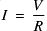
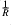
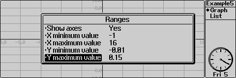
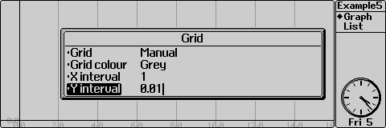
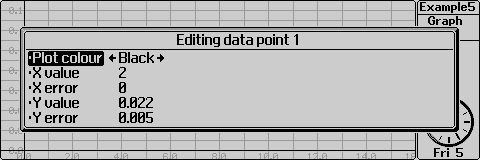
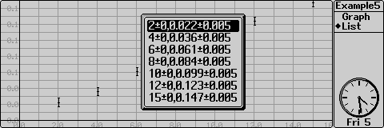
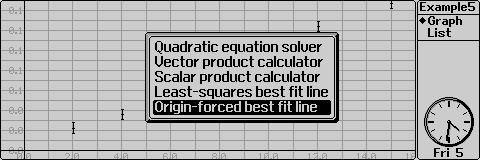
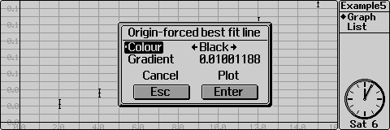
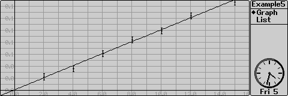

In an experiment to find the value of a resistor, the voltage across the resistor was varied and the consequent current was measured as in the table below. Using the relation V=IR, find the value of the resistor. (The instruments were carefully calibrated before use to eliminate offset errors)
| Voltage /V (negligible error) | Current /A +/- 0.001 |
|---|---|
| 2.0 | 0.022 |
| 4.0 | 0.036 |
| 6.0 | 0.061 |
| 8.0 | 0.084 |
| 10.0 | 0.099 |
| 12.0 | 0.123 |
| 15.0 | 0.147 |
This problem is representative of how Osiris might be used in the laboratory. In such a situation, data points can be entered as collected in order to provide a constantly updated graph - allowing the user to spot points which do not agree with the trend. Since such points often imply that something of interest is happening, these can then be duly investigated.
Before starting, we must consider exactly what to plot. Traditionally, the variable which is altered (in this case the voltage) is plotted on the x axis and the variable measured (in this case current) is plotted on the y-axis. We can rearrange the equation V=IR to become

. From this we deduce that if the current is plotted wrt the voltage, the gradient should be the quantity
- compare it with the equation of a straight line, y=mx+c.Before entering the data, it is also a good idea to set the Ranges and Grid to sensible values.

| Show axes | Yes |
| X minimum value | -1 |
| X maximum value | 16 |
| Y minimum value | -0.01 |
| Y maximum value | 0.15 |

| Grid | Manual |
| Grid colour | Grey |
| X interval | 1 |
| Y interval | 0.01 |
We shall now enter the data. Our data points have negligible error in V and an error of +/- 0.001 A in I. We can use this to give the points error bars.

| Plot Colour | Black |
| X value | 2 |
| X error | 0 |
| Y value | 0.022 |
| Y error | 0.001 |

To find R, we must plot the line of best fit for this data. This is done by a "utility" - a small program which extends the functionality of Osiris. Utilities could, for example, provide either a macro for a commonly used graph or a mathematical function not related to graphing. If you have a little knowledge of OPL, you can write your own utilities.

A description of all the utilities which are currently installed is displayed. Two linear best fit utilities are provided: "Least-squares best fit line" and "Origin-forced best fit line". The former uses a least-squares method to fit a line to the data, the latter does the same except that the line is forced through the origin. It is important to consider which to use very carefully - just because the line theoretically goes through the origin does not always mean that it should be so plotted due to the possibility of a zero offset error in the readings. In our case, as the instruments were calibrated, we can safely use the "Origin-forced best fit line" utility.

The dialog displays the gradient of the line which is 0.01001188. The resistor's value is the inverse of this value, ie about 100 Ohms.

Now that you've completed this tutorial, you should understand how to enter data points with errors and display a line of best fit for your data. You should also understand how to launch utilities from Osiris.
As usual, a list of suggestions for further experimentation are provided. Do make sure you have saved your work before you try them - use "Save" from the "File" menu or press PSION-S.
| xsum | The sum of all the x values. |
| ysum | The sum of all the y values. |
| xysum | the sum of the products of the paired x and y values. |
| xxsum | The sum of the squares of the x values. |
| n | The number of data points. |
| xavg | The mean x value. |
| yavg | the mean y value. |